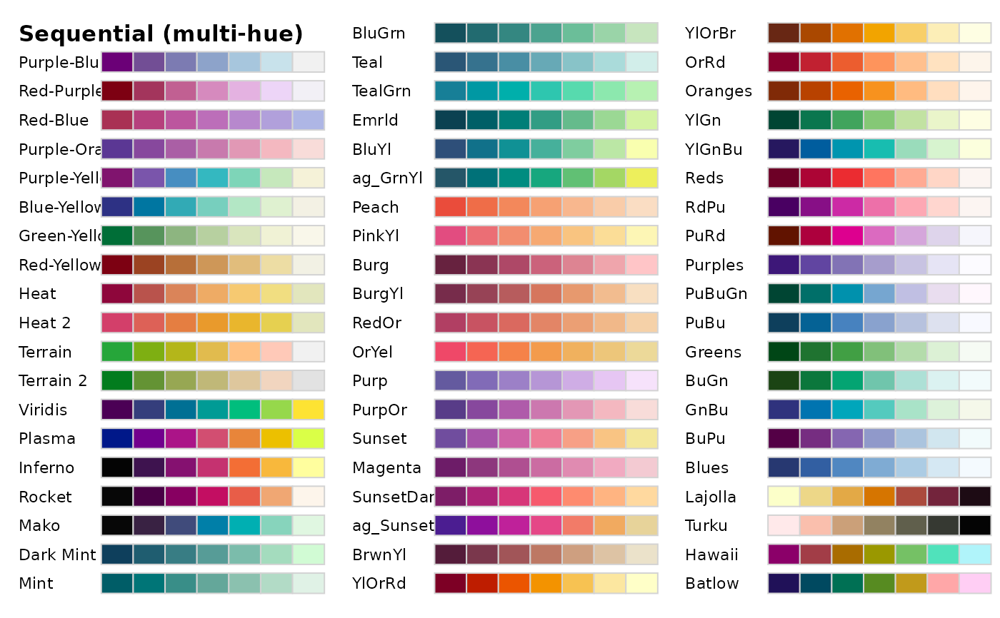
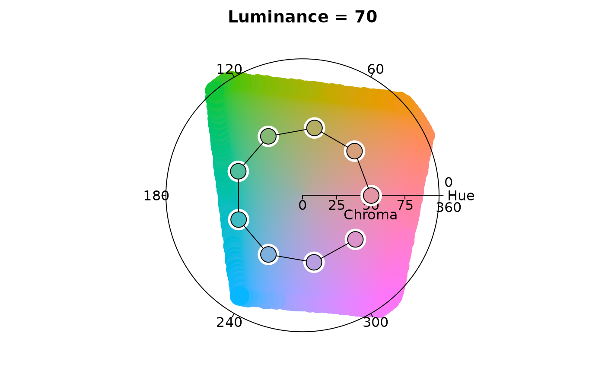

HCL Color Palettes
hcl_palettes.RdQualitative, sequential (single-hue and multi-hue), and diverging color palettes based on the HCL (hue-chroma-luminance) color model.
hcl_palettes(type = NULL, palette = NULL, plot = FALSE, n = 5L, ...) # S3 method for hcl_palettes print(x, ...) # S3 method for hcl_palettes summary(object, ...) # S3 method for hcl_palettes plot(x, n = 5L, fixup = TRUE, off = NULL, border = NULL, ...) qualitative_hcl(n, h = c(0, 360 * (n - 1)/n), c = 80, l = 60, fixup = TRUE, alpha = 1, palette = NULL, rev = FALSE, ..., h1, h2, c1, l1) sequential_hcl(n, h = 260, c = 80, l = c(30, 90), power = 1.5, gamma = NULL, fixup = TRUE, alpha = 1, palette = NULL, rev = FALSE, ..., h1, h2, c1, c2, l1, l2, p1, p2, cmax, c.) diverging_hcl(n, h = c(260, 0), c = 80, l = c(30, 90), power = 1.5, gamma = NULL, fixup = TRUE, alpha = 1, palette = NULL, rev = FALSE, ..., h1, h2, c1, l1, l2, p1, p2, cmax)
Arguments
| type | character indicating type of HCL palette. |
|---|---|
| palette | character. Name of HCL color palette. |
| plot | logical. Should the selected HCL color palettes be visualized? |
| n | the number of colors (\(\ge 1\)) to be in the palette. |
| … | Other arguments passed to |
| x, object | A |
| fixup | logical. Should the color be corrected to a valid RGB value? |
| off | numeric. Vector of length 2 indicating horizontal and vertical offsets between the color rectangles displayed. |
| border | character. Color of rectangle borders. |
| h, h1, h2 | hue value in the HCL color description, has to be in [0, 360]. |
| c, c., c1, c2 | chroma value in the HCL color description. |
| l, l1, l2 | luminance value in the HCL color description. |
| alpha | numeric vector of values in the range |
| rev | logical. Should the color palette vector be returned in reverse order? |
| power, p1, p2 | control parameter determining how chroma and luminance should be increased (1 = linear, 2 = quadratic, etc.). |
| gamma | Deprecated. |
| cmax | Maximum chroma value in the HCL color description. |
Details
The HCL (hue-chroma-luminance) color model is a perceptual color model
obtained by using polar coordinates in CIE LUV space
(i.e., polarLUV), where steps of equal size correspond to
approximately equal perceptual changes in color. By taking polar coordinates
the resulting three dimensions capture the three perceptual axes very well:
hue is the type of color, chroma the colorfulness compared
to the corresponding gray, and luminance the brightness. This makes it relatively
easy to create balanced palettes through trajectories in this HCL space.
In contrast, in the more commonly-used HSV (hue-saturation-value)
model (a simple transformation of RGB), the three axes are
confounded so that luminance changes along with the hue leading to very
unbalanced palettes (see rainbow_hcl for further illustrations).
Three types of palettes are derived based on the HCL model:
Qualitative: Designed for coding categorical information, i.e., where no particular ordering of categories is available and every color should receive the same perceptual weight.
Sequential: Designed for coding ordered/numeric information, i.e., where colors go from high to low (or vice versa).
Diverging: Designed for coding numeric information around a central neutral value, i.e., where colors diverge from neutral to two extremes.
The corresponding functions are qualitative_hcl, sequential_hcl,
and diverging_hcl. Their construction principles are explained in more detail below.
At the core is the luminance axis (i.e., light-dark contrasts):
These are easily decoded by humans and matched to high-low differences in the underlying
data. Therefore, sequential_hcl palettes are always based on a monotonic
luminance sequence whereas the colors in a qualitative_hcl palette all have the
same luminance. Finally, diverging_hcl palettes use the same monotonic
luminance sequence in both “arms” of the palette, i.e., correspond to
two balanced sequential palettes diverging from the same neutral value.
The other two axes, hue and chroma, are used to enhance the luminance information and/or
to further discriminate the color.
All three palette functions specify trajectories in HCL space and hence need either
single values or intervals of the coordinates h, c, l. Their
interfaces are always designed such that h, c, l can take vector
arguments (as needed) but alternatively or additionally h1/h2,
c1/c2/cmax, and l1/l2 can be specified. If so,
the latter coordinates overwrite the former.
qualitative_hcl distinguishes the underlying categories by a sequence of
hues while keeping both chroma and luminance constant to give each color in the
resulting palette the same perceptual weight. Thus, h should be a pair of
hues (or equivalently h1 and h2 can be used) with the starting and
ending hue of the palette. Then, an equidistant sequence between these hues is
employed, by default spanning the full color wheel (i.e, the full 360 degrees).
Chroma c (or equivalently c1) and luminance l (or equivalently
l1) are constants.
sequential_hcl codes the underlying numeric values by a monotonic sequence
of increasing (or decreasing) luminance. Thus, the l argument should provide
a vector of length 2 with starting and ending luminance (equivalently, l1 and
l2 can be used). Without chroma (i.e., c = 0), this simply corresponds
to a grayscale palette like gray.colors. For adding chroma, a simple
strategy would be to pick a single hue (via h or h1) and then decrease
chroma from some value (c or c1) to zero (i.e., gray) along with
increasing luminance. For bringing out the extremes (a dark high-chroma color vs.
a light gray) this is already very effective. For distinguishing also colors in the
middle two strategies can be employed: (a) Hue can be varied as well by specifying an
interval of hues in h (or beginning hue h1 and ending hue h2).
(b) Instead of a decreasing chroma a triangular chroma trajectory can be employed
from c1 over cmax to c2 (or equivalently a vector c of
length 3). This yields high-chroma colors in the middle of the palette that are
more easily distinguished from the dark and light extremes. Finally, instead of
employing linear trajectories, power transformations are supported in chroma and
luminance via a vector power (or separate p1 and p2). If
power[2] (or p2) for the luminance trajectory is missing, it defaults
to power[1]/p1 from the chroma trajectory.
diverging_hcl codes the underlying numeric values by a triangular luminance
sequence with different hues in the left and in the right arm of the palette. Thus,
it can be seen as a combination of two sequential palettes with some restrictions:
(a) a single hue is used for each arm of the palette, (b) chroma and luminance trajectory
are balanced between the two arms, (c) the neutral central value has zero chroma.
To specify such a palette a vector of two hues h (or equivalently h1
and h2), either a single chroma value c (or c1) or a vector
of two chroma values c (or c1 and cmax), a vector of two
luminances l (or l1 and l2), and power parameter(s) power
(or p1 and p2) are used. For more flexible diverging palettes without
the restrictrictions above (and consequently more parameters)
divergingx_hcl is available. For backward compatibility, diverge_hcl
is a copy of diverging_hcl.
To facilitate using HCL-based palettes a wide range of example palettes are
provided in the package and can be specified by a name instead of a set of
parameters/coordinates. The examples have been taken from the literature and many
approximate color palettes from other software packages such as ColorBrewer.org
(RColorBrewer), CARTO colors (rcartocolor), or scico. The function
hcl_palettes can be used to query the available pre-specified palettes. It
comes with a print method (listing names and types), a summary method
(additionally listing the underlying parameters/coordinates), and a plot
method that creates a swatchplot with suitable labels.
References
Zeileis A, Hornik K, Murrell P (2009). Escaping RGBland: Selecting Colors for Statistical Graphics. Computational Statistics & Data Analysis, 53, 3259--3270. doi: 10.1016/j.csda.2008.11.033 Preprint available from https://eeecon.uibk.ac.at/~zeileis/papers/Zeileis+Hornik+Murrell-2009.pdf.
Stauffer R, Mayr GJ, Dabernig M, Zeileis A (2015). Somewhere Over the Rainbow: How to Make Effective Use of Colors in Meteorological Visualizations. Bulletin of the American Meteorological Society, 96(2), 203--216. doi: 10.1175/BAMS-D-13-00155.1
See also
Examples
## overview of all _named_ HCL palettes hcl_palettes()#> HCL palettes #> #> Type: Qualitative #> Names: Pastel 1, Dark 2, Dark 3, Set 2, Set 3, Warm, Cold, Harmonic, Dynamic #> #> Type: Sequential (single-hue) #> Names: Grays, Light Grays, Blues 2, Blues 3, Purples 2, Purples 3, Reds 2, #> Reds 3, Greens 2, Greens 3, Oslo #> #> Type: Sequential (multi-hue) #> Names: Purple-Blue, Red-Purple, Red-Blue, Purple-Orange, Blue-Yellow, #> Green-Yellow, Red-Yellow, Heat, Heat 2, Terrain, Terrain 2, #> Viridis, Plasma, Inferno, Dark Mint, Mint, BluGrn, Teal, #> TealGrn, Emrld, BluYl, ag_GrnYl, Peach, PinkYl, Burg, BurgYl, #> RedOr, OrYel, Purp, PurpOr, Sunset, Magenta, SunsetDark, #> ag_Sunset, BrwnYl, YlOrRd, YlOrBr, OrRd, Oranges, YlGn, YlGnBu, #> Reds, RdPu, PuRd, Purples, PuBuGn, PuBu, Greens, BuGn, GnBu, #> BuPu, Blues, Lajolla, Turku #> #> Type: Diverging #> Names: Blue-Red, Blue-Red 2, Blue-Red 3, Red-Green, Purple-Green, #> Purple-Brown, Green-Brown, Blue-Yellow 2, Blue-Yellow 3, #> Green-Orange, Cyan-Magenta, Tropic, Broc, Cork, Vik, Berlin, #> Lisbon, Tofino## visualize hcl_palettes("qualitative", plot = TRUE)hcl_palettes("sequential (single-hue)", n = 7, plot = TRUE)hcl_palettes("sequential (multi-hue)", n = 7, plot = TRUE)hcl_palettes("diverging", n = 7, plot = TRUE)## inspect a specific palette ## (upper-case, spaces, etc. are ignored for matching) hcl_palettes(palette = "Dark 2")#> HCL palette #> Name: Dark 2 #> Type: Qualitative #> Parameter ranges: #> h1 h2 c1 c2 l1 l2 p1 p2 cmax fixup #> 0 NA 50 NA 60 NA NA NA NA TRUEhcl_palettes(palette = "dark2")#> HCL palette #> Name: Dark 2 #> Type: Qualitative #> Parameter ranges: #> h1 h2 c1 c2 l1 l2 p1 p2 cmax fixup #> 0 NA 50 NA 60 NA NA NA NA TRUE## set up actual colors qualitative_hcl(4, h = c(0, 288), c = 50, l = 60) ## by hand#> [1] "#C87A8A" "#8A9748" "#00A2A2" "#A782C3"qualitative_hcl(4, palette = "dark2") ## by name#> [1] "#C87A8A" "#909646" "#00A396" "#9189C7"qualitative_hcl(4, palette = "dark2", c = 80) ## by name plus modification#> [1] "#E16A86" "#909800" "#00AD9A" "#9183E6"## how HCL palettes are constructed: ## by varying the perceptual properties via hue/chroma/luminance swatchplot( "Hue" = sequential_hcl(5, h = c(0, 300), c = c(60, 60), l = 65), "Chroma" = sequential_hcl(5, h = 0, c = c(100, 0), l = 65, rev = TRUE, power = 1), "Luminance" = sequential_hcl(5, h = 260, c = c(25, 25), l = c(25, 90), rev = TRUE, power = 1), off = 0 )## for qualitative palettes luminance and chroma are fixed, varying only hue hclplot(qualitative_hcl(9, c = 50, l = 70))## single-hue sequential palette (h = 260) with linear vs. power-transformed trajectory hclplot(sequential_hcl(7, h = 260, c = 80, l = c(35, 95), power = 1))## advanced single-hue sequential palette with triangular chroma trajectory ## (piecewise linear vs. power-transformed) hclplot(sequential_hcl(7, h = 245, c = c(40, 75, 0), l = c(30, 95), power = 1))## multi-hue sequential palette with small hue range and triangular chroma vs. ## large hue range and linear chroma trajectory hclplot(sequential_hcl(7, h = c(260, 220), c = c(50, 75, 0), l = c(30, 95), power = 1))## balanced diverging palette constructed from two simple single-hue sequential ## palettes (for hues 260/blue and 0/red) hclplot(diverge_hcl(7, h = c(260, 0), c = 80, l = c(35, 95), power = 1))